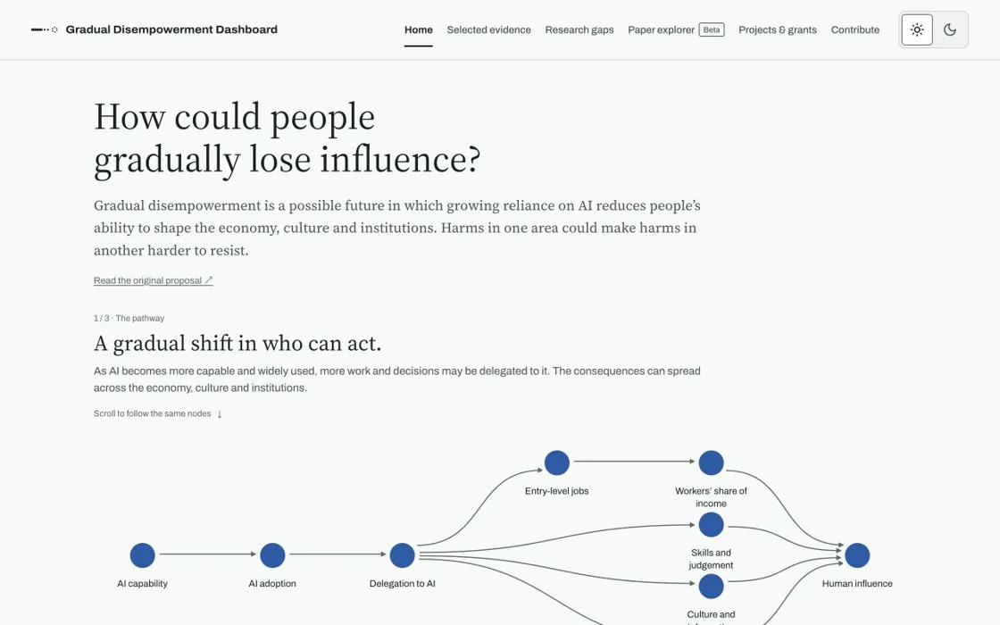
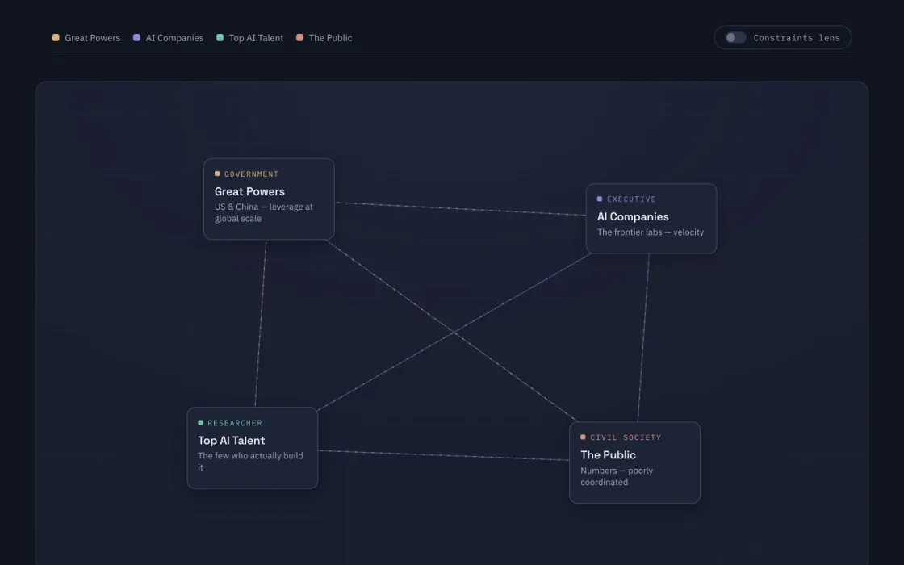
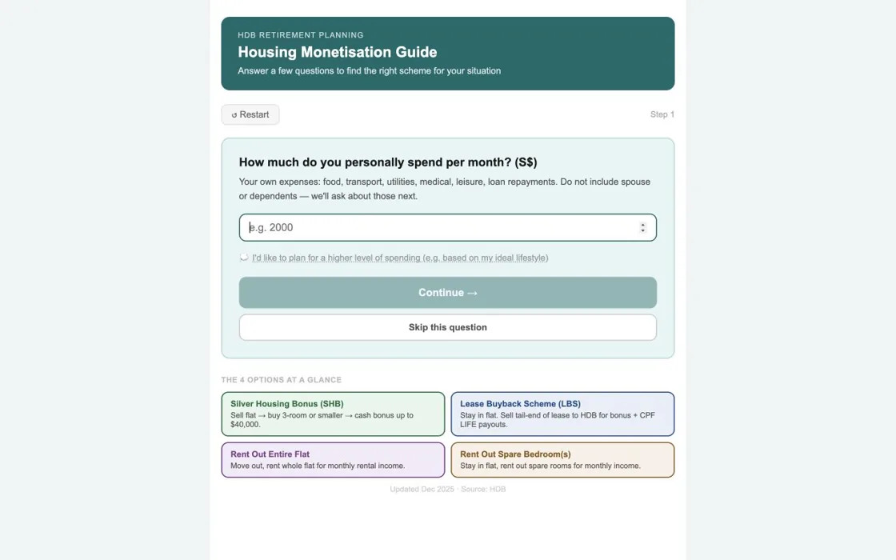

Web apps
Small tools for exploring ideas and making everyday things easier.
-

Gradual Disempowerment Dashboard
In progress
How could we notice people gradually losing influence?
-

AI Governance Ecosystem
In progress
Who shapes AI, and what do they want? A map of actors, incentives, and tensions.
-

HDB Housing Monetisation Guide
A prototype for comparing housing monetisation options and retirement income in Singapore.